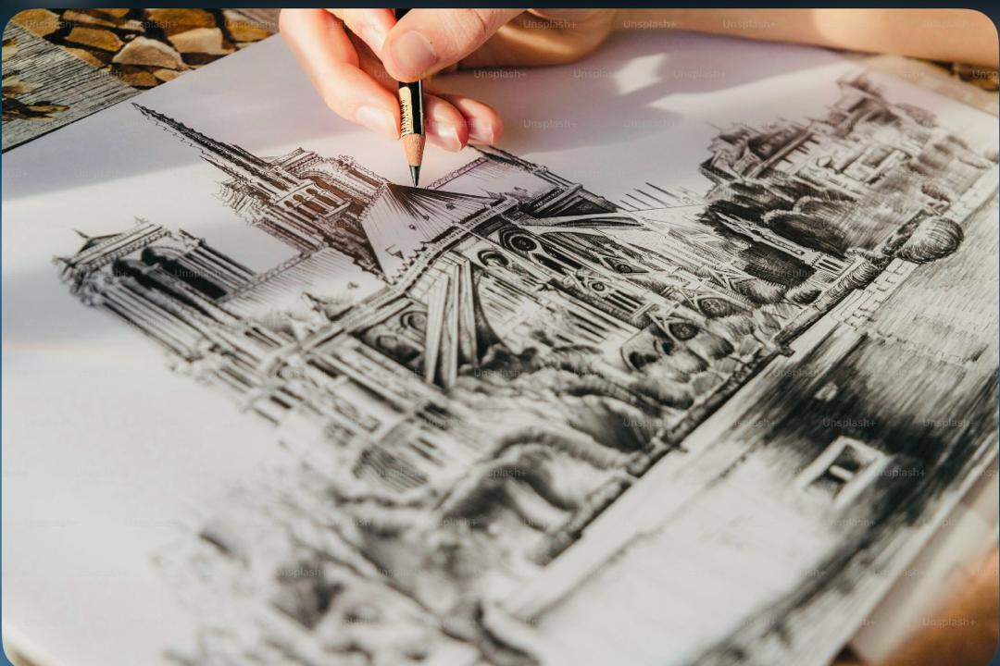
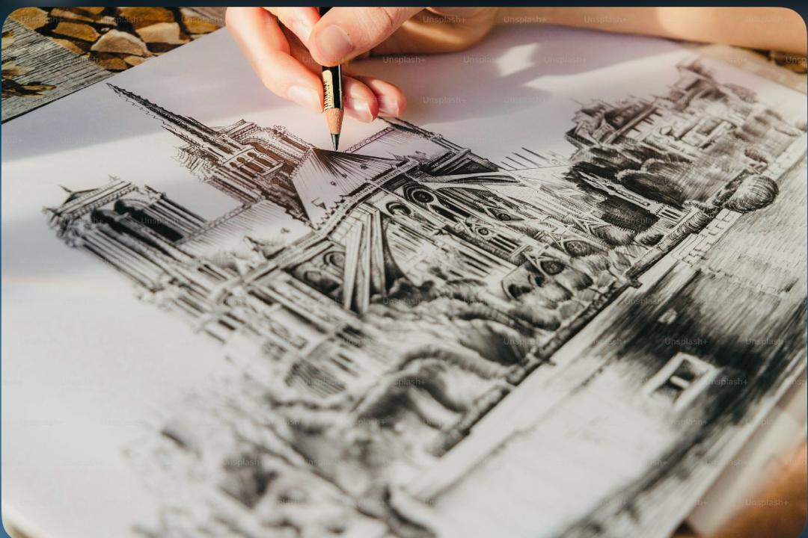

À propos
Je suis une étudiante passionnée par l’art 🖼️ et le dessin. Ce site a été conçu dans le cadre d’un projet scolaire pour partager mon regard sur l’importance de l’art dans nos vies. J’espère que cette visite vous aura inspiré ou fait réfléchir.
Un moment de création
 


Quand les traits parlent à ma place:(Dessiner pour exister)
J’aime dessiner parce que le dessin 🎨 me permet de m’exprimer. C’est ma passion car il me fait découvrir de nouvelles idées et sensations. Quand je dessine, je peux montrer ce que je ressens sans utiliser de mots. Cela m’apporte de la tranquillité : je me sens calme et heureux quand je crée. Dessiner m’aide aussi à mieux me connaître.